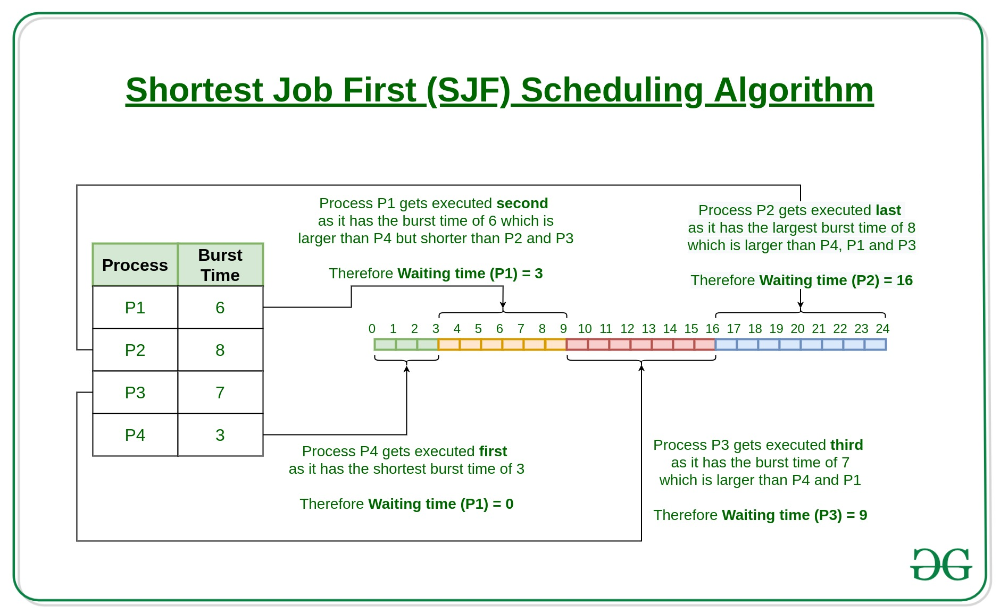

 Shortest job first (SJF) or shortest job next, is a scheduling policy that selects the waiting process with the smallest execution time to execute next.
● Shortest Job first has the advantage of having a minimum average waiting time among all scheduling algorithms.
● It is practically infeasible as the Operating System may not know burst time and therefore may not sort them.● It is a Greedy Algorithm.
● It is practically infeasible as the Operating System may not know burst time and therefore may not sort them.
Checkout the simulation of SJF Non-Preemptive